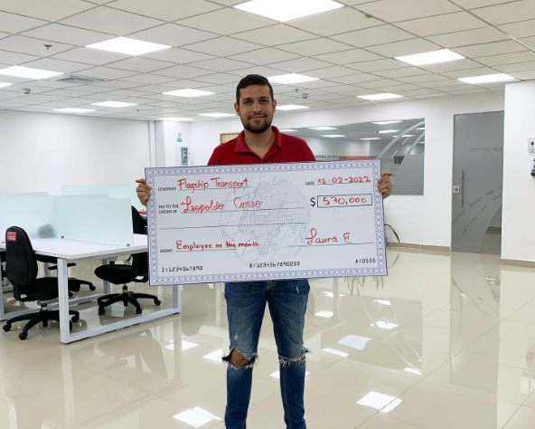
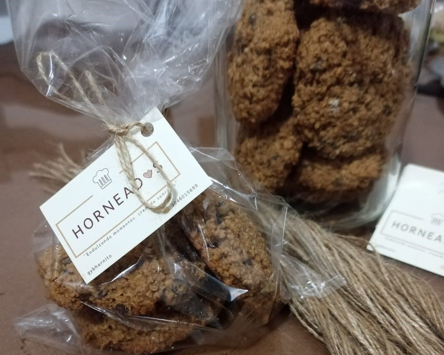

Sobre mi
Hola, bienvenido a mi blog! Mi nombre es Leopoldo Coneo. Nací en 1990, soy de Cartagena, pero he vivido la mayoría de mi vida en Barranquilla y soy un aficionado al running, ciclismo y los videojuegos.
Desde que tengo uso de razón me han atraído las consolas. Mi primera fue un Supernintendo, luego un PS2, un Xbox 360 y actualmente un PS4. Me encanta jugar en línea por la sensación de estar interactuando con otras personas y me considero un mal perdedor.
Otra de mis pasiones es el ciclismo. Trato de practicarlo al menos una vez por semana, dando vueltas a Barranquilla en mi bicicleta, pero dependo mucho de las condiciones climáticas para desarrollar esta actividad. Por último, mi mayor pasión es el running. Lo practico de dos a tres veces por semana. Acabo de terminar mi tercera carrera oficial completando 21 kilómetros en la ciudad de Medellín.
Vida laboral
Empecé trabajando como agente telefónico de servicio al cliente, también he sido agente verificador para evitar fraudes y hoy soy reclutador de conductores para una empresa logística en Estados Unidos.
Proyectoc
Ahora mismo empecé un negocio de galletas caseras, el cual ha tenido una gran acogida por los consumidores y aspiro en menos de un año tener mi propio punto de venta físico.
Redes y contacto